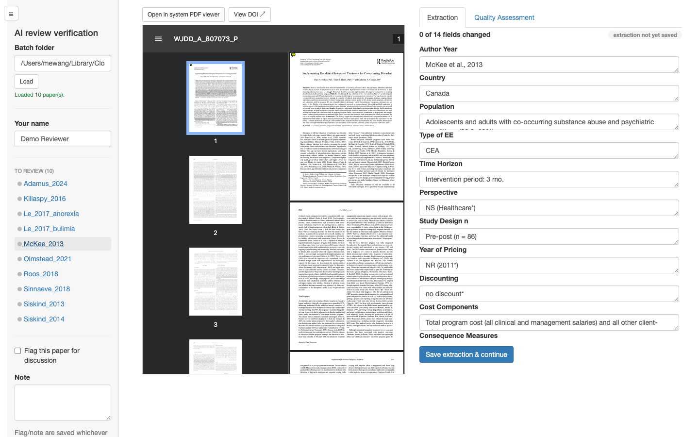
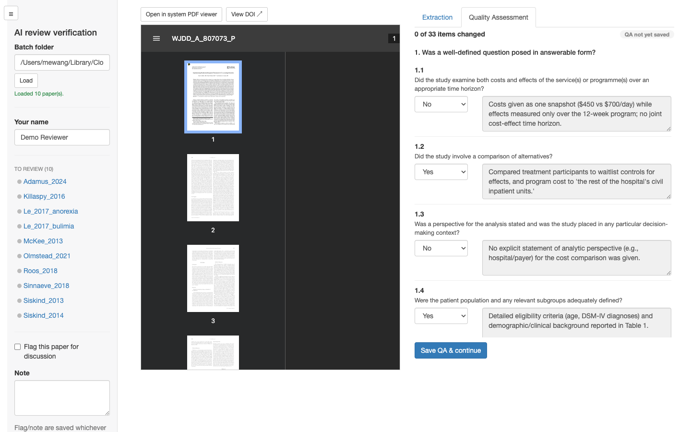
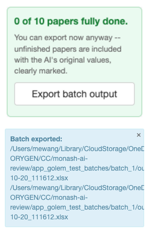

CoReview is a Shiny app for checking and correcting AI-generated data extraction and Drummond quality-appraisal results against the original source PDFs, as part of an AI-assisted health economic literature review.
Reviewers work through papers one at a time: the source PDF sits alongside the AI’s extracted data, so every field and QA verdict can be checked and corrected at a glance.
Setting up a review
Before reviewers start, the AI pipeline’s extraction and QA
spreadsheets are split into one self-contained batch folder per reviewer
with split_for_review(). This is typically run once by
whoever is coordinating the review, not something individual reviewers
need to worry about. See ?split_for_review for details.
Reviewing a paper
Launch the app pointed at a batch folder:
run_app(batch_dir = "review_batches/batch_1", reviewer = "Jane Doe")(batch_dir and reviewer are both optional –
without batch_dir the app opens with a folder picker
instead, and reviewer just pre-fills the reviewer name on
save.)
The sidebar lists every paper in the batch; selecting one opens its PDF and AI-extracted data side by side.
Extraction
Each field shows the AI’s extracted value, editable inline. A field a reviewer actually changes is tracked (and later highlighted in the exported deliverable) so it’s clear what was AI output versus human-corrected.

Quality Assessment
The Quality Assessment tab covers the Drummond checklist’s 33 sub-items. Each has the AI’s verdict, editable, alongside its supporting evidence quote – display-only, since that’s the AI’s own justification for the verdict, not something a reviewer rewrites.

Saving and moving between papers
“Save extraction & continue” / “Save QA & continue” record what’s changed and update the status badge and change counter for that section. Switching to a different paper – from the sidebar, or automatically after both sections of the current one are saved – always opens back on the Extraction tab.
A reviewer can export their own batch at any point with the app’s “Export batch output” button, useful as a checkpoint partway through, without waiting for the whole batch to be finished:

Combining all batches
Once reviewing is done (or to check progress partway through),
combine_reviewed() merges every batch into the two final
verified deliverables, with every reviewer-changed cell highlighted. See
?combine_reviewed for details.